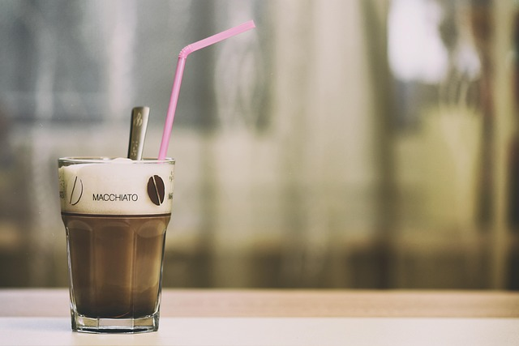

A macchiato is an espresso-based coffee drink originating in Italy, where "macchiato" means "stained" or "marked," referring to the small amount of milk or foam added to a shot of espresso to lightly "mark" it.
Traditionally, it is made by adding just a small splash of steamed or foamed milk—typically 1–2 teaspoons to a single shot of espresso, resulting in a high espresso-to-milk ratio that preserves the bold coffee flavor while softening its intensity slightly.
Ingredients: